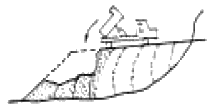
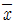
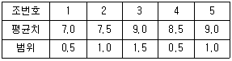
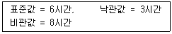
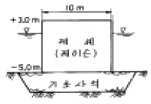
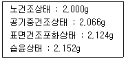
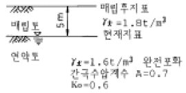
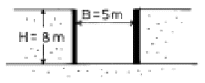
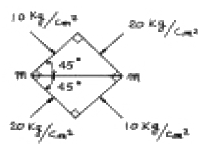
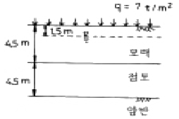

건설재료시험기사 (2005-05-29 기출문제)
1과목: 콘크리트공학
1. 쪼갬인장시험으로 부터 최대하중 P=10 t을 얻었다. 원주 공시체의 직경이 10 cm, 길이가 20 cm 라고 하면 이 공시체의 쪼갬인장강도는?
- 12.7 kg/cm2
- 15.9 kg/cm2
- 31.8 kg/cm2
- 63.6 kg/cm2
(정답률: 알수없음)

2. 다음 중 수중콘크리트 치기 및 양생방법으로 잘못된 것은?
- 콘크리트 타설에서 완전히 물막이를 할 수 없는 경우 유속은 1초간 10 cm 이하로 하는 것이 좋다.
- 콘크리트를 수중에 낙하시키면 재료분리가 일어나므로 콘크리트는 수중에 낙하시켜서는 안 된다.
- 콘크리트가 경화될 때까지 물의 유동을 방지하여야 한다.
- 한 구획의 콘크리트 타설을 완료한 후 레이턴스를 모두 제거하고 다시 타설하여야 한다.
(정답률: 알수없음)
3. AE콘크리트에서 공기량에 영향을 미치는 요인들에 대한 설명으로 잘못된 것은?
- 단위시멘트량이 증가할수록 공기량은 감소한다.
- 배합과 재료가 일정하면 슬럼프가 작을수록 공기량은 증가한다.
- 콘크리트의 온도가 낮을수록 공기량은 증가한다.
- 콘크리트가 응결·경화되면 공기량은 증가한다.
(정답률: 알수없음)
4. 콘크리트의 재료분리 현상을 줄이기 위한 사항이 아닌것은?
- 잔골재율을 증가시킨다.
- 물-시멘트비를 작게 한다.
- 굵은골재를 많이 사용한다.
- 포졸란을 적당량 혼합한다.
(정답률: 알수없음)
5. 한중(寒中) 콘크리트에 사용하는 재료의 설명 중 옳지 않은 것은?
- 시멘트는 조강 포틀랜드 시멘트를 사용해도 좋다.
- 시멘트는 냉각되지 않도록 하고, 사용시 직접 가열하여 온도 저하를 방지하는 것이 좋다.
- 골재는 시트 등으로 덮어서 동결이 방지되도록 저장해야 한다.
- 칼슘이나 나트륨 같은 염화물은 경화를 촉진하는 효과가 있다.
(정답률: 알수없음)
6. 콘크리트 시방배합설계에서 단위수량 166kg/m3, 물-시멘트비가 39.4% 이고, 시멘트비중 3.15, 공기량 1.0%로 하는 경우 골재의 절대용적은?
- 0.690 m3
- 0.620 m3
- 0.580 m3
- 0.310 m3
(정답률: 알수없음)
7. 다음 콘크리트의 크리프에 대한 설명이 잘못된 것은?
- 재하응력이 클수록 크리프는 크다.
- 재하시에 재령이 작을수록 크리프는 크다.
- 물-시멘트비가 클수록 크리프는 크다.
- 조강시멘트는 보통시멘트보다 크리프가 크다.
(정답률: 알수없음)
8. 콘크리트용 재료 계량의 허용오차에 대한 기준으로 잘못된것은?
- 물 - 1%
- 시멘트 - 1%
- 골재 - 3%
- 혼화제 - 1%
(정답률: 알수없음)
9. 섬유보강콘크리트에 관한 설명 중 틀린 것은?
- 섬유보강콘크리트는 콘크리트의 인장강도와 균열에 대한 저항성을 높인 콘크리트이다.
- 믹서는 섬유를 콘크리트 속에 균일하게 분산시킬 수 있는 가경식 믹서를 사용하는 것을 원칙으로 한다.
- 시멘트계 복합재료용 섬유는 강섬유, 유리섬유, 탄소섬유 등의 무기계섬유와 아라미드섬유, 비닐론섬유 등의 유기계섬유로 분류한다.
- 섬유보강콘크리트에 사용되는 섬유는 섬유와 시멘트 결합재 사이의 부착성이 양호하고, 섬유의 인장강도가 커야 한다.
(정답률: 알수없음)
10. 콘크리트의 품질을 개선할 목적으로 사용하는 혼화재료는 혼화재와 혼화제로 분류한다. 분류의 기준은 무엇인가?
- 사용량
- 사용용도
- 사용방법
- 사용재료
(정답률: 알수없음)
11. 프리스트레스트 콘크리트에 사용하는 그라우트에 대한 품질규정으로 틀린 것은?
- 팽창성 그라우드의 팽창률은 0∼10%를 표준으로 한다.
- 블리딩률은 5% 이하이어야 한다.
- 팽창성 그라우트의 재령 28일의 압축강도는 20MPa 이상을 표준으로 한다.
- 물-시멘트비는 45% 이하이어야 한다.
(정답률: 알수없음)
12. 보통포틀랜드시멘트를 사용한 경우 콘크리트의 표준 습윤 양생 기간은? (단, 일평균기온이 15℃이상인 경우)
- 1일 이상
- 3일 이상
- 5일 이상
- 7일 이상
(정답률: 60%)
13. 콘크리트의 동결융해에 대한 설명 중 틀린 것은?
- 다공질의 골재를 사용한 콘크리트는 일반적으로 동결융해에 대한 저항성이 떨어진다.
- 콘크리트의 표층박리(scaling)는 동결융해작용에 의한 피해의 일종이다.
- 동결융해에 의한 콘크리트의 피해는 콘크리트가 물로 포화되었을 때 가장 크다.
- 콘크리트의 초기 동결융해에 대한 저항성을 높이기 위해서는 물-시멘트비를 크게 한다.
(정답률: 알수없음)
14. 프리스트레스트 콘크리트에서 프리텐션방식으로 프리스트레싱을 할 때의 재령 28일 콘크리트 압축강도는 최소 얼마이상이어야 하는가?
- 30 MPa
- 40 MPa
- 50 MPa
- 20 MPa
(정답률: 알수없음)
15. 콘크리트 비비기로부터 타설이 끝날 때까지의 시간 한도를 바르게 설명한 것은?
- 외기온도가 25℃이상일 때에는 120분이내, 외기온도가 25℃미만일 때에는 150분이내
- 외기온도에 상관없이 90분이내
- 외기온도가 25℃이상일 때에는 90분이내, 외기온도가 25℃미만일 때에는 120분이내
- 외기온도에 상관없이 120분이내
(정답률: 알수없음)
16. 콘크리트 펌프를 사용할 때 주의 사항으로 틀린 것은?
- 시멘트량이 적은 것이 바람직하다.
- 골재의 입도분포는 연속이어야 한다.
- 잔골재율을 증가시켜야 한다.
- 슬럼프가 커야 한다.
(정답률: 알수없음)
17. 황산나트륨에 의한 안정성시험을 할 경우, 조작을 5번 반복했을 때 잔골재의 손실중량 백분율의 한도는 일반적으로 몇 %이하로 하여야 하는가?
- 5 %
- 10 %
- 15 %
- 20 %
(정답률: 알수없음)
18. 골재의 품질이 콘크리트의 배합 또는 성질에 미치는 영향에 대하여 기술한 다음 내용 중 잘못된 것은?
- 실적률이 작은 쇄사를 이용하면, 콘크리트의 워커빌리티가 나빠진다.
- 같은 슬럼프의 콘크리트를 얻으려 하는 경우, 굵은골재 최대치수가 클수록 단위수량은 적게 된다.
- 콘크리트 배합설계 시의 단위수량은 골재의 기건상태를 기준으로 한다.
- 잔골재의 조립율 변동이 커지면, 콘크리트의 워커빌리티 변동이 커진다.
(정답률: 알수없음)
19. 다음 중 관리도에서 관리상태에 있기 위한 조건이 아닌것은?
- 점들의 나열된 방향이 이상이 없는 경우
- 점이 관리 한계선 밖으로 벗어나지 않은 경우
- 연속한 35점 중 한계 밖으로 벗어난 점이 1점 이내인 경우
- 연속한 100점 중 한계 밖으로 벗어난 점이 4점 이내인 경우
(정답률: 알수없음)
20. 다음 건조수축에 대한 설명 중 옳지 않은 것은?
- 콘크리트는 습기를 흡수하면 팽창하고 건조하면 수축한다.
- 건조수축을 적게 하려면 단위수량을 적게 하는 것이 중요하다.
- 건조수축은 표면으로부터 내부로 향하여 건조하므로 표면에는 압축 응력이, 내부 콘크리트에는 인장응력이 일어난다.
- 건조가 계속되어 철근둘레의 콘크리트까지 이르게 되면 철근이 건조수축을 방해한다.
(정답률: 알수없음)
2과목: 건설시공 및 관리
21. 건물의 기초공사에 흙막이 앵커공법을 적용하는 경우에 대한 설명으로 잘못된 것은?
- 작업공간이 넓어 대형기계의 사용이 가능하다.
- 공기가 단축되고 굴착단가가 낮게 될 수 있다.
- 버팀보 작업이 필요 없다.
- 흙막이 배면의 본바닥이 이완될 우려가 많다.
(정답률: 알수없음)
22. 10,000m3(자연상태)의 사질토를 4m3의 덤프트럭으로 운반하려고 한다. 필요한 트럭의 대수는? (단, 사질토의 토량변화율 L=1.25, C=0.88)
- 3,125 (대)
- 2,200 (대)
- 2,841 (대)
- 2,000 (대)
(정답률: 알수없음)
23. 터널 시공시 pilot tunnel의 역할은 무엇인가?
- 지질조사 및 지하수 배제
- 측량을 위한 예비터널
- 환기시설
- 기자재 운반
(정답률: 알수없음)
24. 기계위치보다 낮거나 높은 곳도 굴착이 가능하여 주로 넓은 범위의 굴착시 사용되고 수로, 하상굴착 또는 골재 채취에 이용되는 셔블계 굴착기는?
- 백호우
- 드래그라인
- 파워셔블
- 크램셀
(정답률: 알수없음)
25. 연약지반의 다음 개량방법 중 넓은 사질 연약지반에 적당 하고, 집수관, 양수관, 연결관 등의 기계설비가 필요한 공법은?
- 압성토 공법
- 모래 말뚝(sand drain)공법
- 웰포인트(well point)공법
- 전기 및 약품 주입공법
(정답률: 알수없음)
26. 국내 도로 파손의 주요 원인은 소성변형으로 전체 파손의 약 75%정도를 차지하고 있다. 최근 이러한 소성변형의 억제방법 중 하나로 기존의 밀입도 아스팔트 혼합물 대신 상대적으로 큰 입경의 골재를 이용한 아스팔트 포장방법을 무엇이라 하는가?
- SBS
- SBR
- SMA
- SMR
(정답률: 알수없음)
27. 사이폰 관거(syphon drain)에 대한 다음 설명 중 옳지 않은 것은?
- 암거가 앞뒤의 수로바닥에 비하여 대단히 낮은 위치에 축조된다.
- 일종의 집수암거로 주로 하천의 복류수를 이용하기 위하여 쓰인다.
- 용수, 배수, 운하 등 성질이 다른 수로가 교차하지만 합류시킬 수 없을 때 사용한다.
- 다른 수로 혹은 노선과 교차할 때 사용된다.
(정답률: 알수없음)
28. 흙의 성토작업에서 다음 그림의 쌓기 방법은?

- 전방층 쌓기
- 수평층 쌓기
- 물다짐 공법
- 비계층 쌓기
(정답률: 알수없음)
29. 말뚝을 타입한 후 현장여건에 따라 말뚝머리를 절단할 때 가장 주의해야 하는 말뚝의 형태는?
- 나무말뚝
- 강말뚝
- PC말뚝
- 철근콘크리트말뚝
(정답률: 알수없음)
30. 터널의 계획, 설계, 시공시 본바닥의 성질 및 지질구조를 가장 정확하게 알기 위한 조사방법은?
- 물리적 탐사
- 탄성파 탐사
- 전기 탐사
- 보링(Boring)
(정답률: 알수없음)
31. AASHTO 콘크리트포장 설계시 설계입력자료가 아닌 것은?
- 교통조건
- 설계서비스지수 손실량
- 신뢰도 및 표준편차
- 최적배합비
(정답률: 알수없음)
32. 두꺼운 연약지반의 처리공법 중 점성토이며, 압밀속도를 빨리 하고자 할 때 가장 적당한 공법은?
- 제거치환 공법
- vibro floatation 공법
- 압성토 공법
- vertical drain 공법
(정답률: 알수없음)
33. 아래의 표는 건물공사의 콘크리트 슬럼프 시험결과의 평균치와 범위를 보여준다. 주어진 자료를 이용하여

관리도의 (상한관리선, 하한관리선)을 구하면? (단, A2=1.023을 이용)
- (8.62, 7.78)
- (9.12, 7.28)
- (8.62, 6.78)
- (9.12, 6.28)
(정답률: 알수없음)
34. 타이어 도우저(Tire Dozer)의 장점에 대한 설명 중 틀린것은?
- 함수비가 많은 점토질에 유리하다.
- 비교적 고속으로 운행할 수 있다.
- 제설(除雪) 작업에 유리하다.
- 운반거리가 긴 곳에 유리하다.
(정답률: 알수없음)
35. 암석의 발파이론에서 Hauser의 발파 기본식은? (단, L = 폭약량, C = 발파계수, W = 최소 저항선)
- L = CW
- L = CW2
- L = CW3
- L = CW4
(정답률: 알수없음)
36. 다음 발파법 중 심빼기 발파가 아닌 것은?
- 노컷
- 번컷
- 피라밋컷
- 벤치컷
(정답률: 알수없음)
37. 현장에서 하는 타설 피어공법 중에서 콘크리트 타설 후 Cassing tube의 인발시 철근이 따라 뽑히는 현상이 발생하는 공법은?
- reverse circulation drill 공법
- earth drill 공법
- benoto 공법
- gow 공법
(정답률: 알수없음)
38. 아래의 주어진 조건을 이용하여 3점시간법을 적용하여 activity time을 결정하면?

- 4.3시간
- 5.7시간
- 5.8시간
- 6.8시간
(정답률: 알수없음)
39. 옹벽대신 이용하는 돌쌓기 공사 중 뒤채움에 콘크리트를 이용하고, 줄눈에 모르타르를 사용하는 2m 이상의 돌쌓기 방법은 무엇인가?
- 메쌓기
- 찰쌓기
- 견치돌쌓기
- 줄쌓기
(정답률: 알수없음)
40. 그림과 같은 방파제에서 활동에 대한 안전율은? (단, 파고 H = 3.0m, 제체의 단위중량 w = 2.0t/m3, 해수의 단위중량 w' = 1.0t/m3, 마찰계수 f = 0.6, 파압공식 P =1.5w'H(t/m2))

- 1.23
- 1.33
- 1.53
- 1.83
(정답률: 알수없음)
3과목: 건설재료 및 시험
41. 다음 중 골재의 조립률을 구하는데 사용되는 표준체의 크기가 아닌 것은?
- 40mm
- 10mm
- 1.5mm
- 0.3mm
(정답률: 알수없음)
42. 건설공사 품질시험기준 중 콘크리트용 골재의 염화물 함유량시험의 시험빈도로서 옳은 것은? (단, 바다모래인 경우)
- 1000m3 마다
- 1일 1회 이상
- 1일 3회 이상
- 150m3 마다
(정답률: 알수없음)
43. 초기 강도가 매우 크고 해수 및 기타 화학적 저항성이 크며 열분해 온도가 높아 내화용 콘크리트에 적합한 시멘트는?
- 조강 포틀랜드 시멘트
- 알루미나 시멘트
- 고로슬래그 시멘트
- 플라이애쉬 시멘트
(정답률: 59%)
44. Concrete 혼화 재료인 Pozzolan을 혼합한 Concrete 의 특징 중 틀린 것은?
- Workability가 좋고 재료 분리가 적다.
- 수밀성이 크다.
- 해수에 대한 화학적 저항성이 크다.
- 한중 콘크리트에 적합하다.
(정답률: 알수없음)
45. 다음 중 혼화재(混和材)와 가장 거리가 먼 것은?
- 포졸란(Pozzolan)
- 슬래그(Slag)
- 플라이애쉬(Fly ash)
- 다렉스(Darex)
(정답률: 알수없음)
46. 콘크리트용 골재의 품질판정에 대한 설명 중 틀린 것은?
- 체가름 시험을 통하여 골재의 입도를 판정할 수 있다.
- 골재의 입도가 일정한 경우 실적률을 통하여 골재 입형을 판정할 수 있다.
- 황산나트륨 용액에 골재를 침수시켜 건조시키는 조작을 반복하여 골재의 안정성을 판정할 수 있다
- 조립률로 골재의 입형을 판정할 수 있다.
(정답률: 알수없음)
47. 역청재료의 침입도 시험에서 중량 100g의 표준침이 5초 동안에 5mm 관입했다면 이 재료의 침입도는 얼마인가?
- 10
- 25
- 50
- 500
(정답률: 65%)
48. 다음과 같은 합판의 제조 방법중에서 목재의 이용효율이 높고 가장 널리 사용되는 것은?
- 로타리 베니어(rotary veneer)
- 슬라이스 베니어(sliced veneer)
- 쏘드 베니어(sawed veneer)
- 플라이우드(plywood)
(정답률: 알수없음)
49. 다음 중 아스팔트 혼합물의 마샬 배합설계시 필요하지 않는 사항은?
- 인장강도
- 흐름값 측정
- 마샬 안정도
- 골재의 체가름
(정답률: 알수없음)
50. 다음 중 기폭약의 종류로 옳지 않은 것은?
- 니트로 글리세린
- 뇌산수은
- 질화납
- D.D.N.P
(정답률: 알수없음)
51. 평판재하시험(KSF 2310)에 관한 사항이다. 바르게 설명한 것은?
- 지지력계수(K) = {하중강도(kN/m3) / 침하량(mm)} × 100
- K75 = (1 / 2.0) × K30
- 침하량이 15mm에 달하거나 하중강도가 현장에서 예상할 수 있는 가장 큰 접지 압력의 크기 또는 지반의 항복점을 넘으면 시험을 멈춘다.
- 재하판은 두께 10mm이상의 철재원판으로, 각각 20cm, 30cm, 40cm, 75cm의 것이여야 한다.
(정답률: 알수없음)
52. 다음 시멘트의 저장에 대한 설명 중 잘못된 것은?
- 포대시멘트를 쌓아올리는 높이를 13포로 제한 한 것은 반출을 쉽게하기 위해서이다.
- 저장중에 약간이라도 굳은 시멘트는 공사에 사용해서는 안된다.
- 포대시멘트가 저장 중에 지면으로 부터 습기를 받지 않도록 하기 위해서는 창고의 마루바닥과 지면사이에 30cm 되는 거리가 있는 것이 좋다.
- 방습구조로 된 장소에 품종별로 구분하여 저장한다.
(정답률: 50%)
53. 콘크리트용 혼화제인 AE제에 의한 연행공기량에 영향을 미치는 요인에 대한 설명 중 틀린 것은?
- 사용 시멘트의 비표면적이 작으면 연행공기량은 증가한다.
- 플라이애시를 혼화재로 사용할 경우 미연소 탄소 함유량이 많으면 연행공기량이 감소한다.
- 단위잔골재량이 많으면, 연행공기량은 감소한다.
- 콘크리트의 온도가 높으면 공기량은 감소한다.
(정답률: 알수없음)
54. 대폭파 또는 수중폭파를 동시에 실시하기 위해 뇌관 대신에 사용하는 것은?
- DDNP
- 도폭선
- 도화선
- 데토릴
(정답률: 알수없음)
55. 다음 중 폴리머 콘크리트에 관한 설명으로 틀린 것은?
- 플라스틱 콘크리트 또는 레진 콘크리트라고도 한다.
- 일반적으로 결합재로 액상수지를 쓰므로 시멘트는 전혀 사용하지 않는다.
- 고강도를 얻기 위해서는 골재의 강도보다는 수지의 강도가 더 중요하다.
- 콘크리트용 수지로는 에폭시, 불포화 폴리에스테르 등의 액상 레진이 많이 사용된다.
(정답률: 알수없음)
56. 잔골재를 각 상태에서 계량한 결과가 아래와 같을 때 아래 골재의 유효흡수량(%)을 구하면?

- 1.32%
- 2.73%
- 2.81%
- 7.60%
(정답률: 46%)
57. 냉간가공을 했을 때 강재의 특성으로 옳지 않은 것은?
- 인장강도가 증가한다.
- 경도가 증가한다.
- 밀도는 약간 감소된다.
- 신장이 증가한다.
(정답률: 알수없음)
58. 아스팔트의 물리적 성질 중 옳지 않은 것은?
- 침입도는 아스팔트의 콘시스턴시를 침의 관입저항으로 평가하는 방법이다.
- 아스팔트에는 명확한 융점이 있으며, 온도가 상승하는 데 따라 연화하여 액상이 된다.
- 아스팔트의 연성을 나타내는 수치를 신도라 한다.
- 아스팔트는 온도에 따른 콘시스턴시의 변화가 매우 크며, 이 변화의 정도를 감온성이라 한다.
(정답률: 알수없음)
59. 다음 시멘트의 성분 중 화합물상에서 발열량이 가장 많은 성분은?
- C3A
- C3S
- C4AF
- C2S
(정답률: 알수없음)
60. 어떤 재료의 포아송 비가 1/3이고, 탄성계수는 2,040,000kg/㎝2 일 때 전단 탄성계수는?
- 256,000kg/㎝2
- 765,000kg/㎝2
- 5,440,000kg/㎝2
- 2,295,000kg/㎝2
(정답률: 알수없음)
4과목: 토질 및 기초
61. 그림과 같이 지하수위가 지표와 일치한 연약점토 지반위에 양질의 흙으로 매립 성토할 때 매립이 끝난후 매립후 지표로부터 5m 깊이에서의 과잉 간극수압은 약 얼마인가?

- 9.0t/m2
- 7.9t/m2
- 5.4t/m2
- 3.4t/m2
(정답률: 알수없음)
62. Terzaghi의 수정(修正) 지지력 공식 qult= CNc+βγ1BNr+γ2DfNq에 대한 다음 설명중 틀린 것은?
- α, β는 형상계수로서 기초의 형태에 따라 정해진다.
- γ1, γ2는 흙의 단위중량으로서 지하수위 아래에서는 수중 단위중량을 사용한다.
- Nc, Nr, Nq는 마찰계수로 마찰각과 점착력의 함수이다.
- 허용지지력 qa는 극한 지지력 qult의 1/3을 취하는 것이 보통이다.
(정답률: 알수없음)
63. 다음 그림과 같은 점성토 지반의 굴착저면에서 바닥융기에 대한 안전율을 Terzaghi의 식에 의해 구하면? (단, γ=1.731t/m3, C=2.4t/m2 이다.)

- 3.21
- 2.32
- 1.64
- 1.17
(정답률: 알수없음)
64. 포화점토가 성토직후에 갑자기 파괴되는 경우에 대한 전단강도를 구하는데는 다음의 어느 시험을 사용하는가?
- 비압밀 비배수 시험(UU Test)
- 압밀 비배수 시험(CU Test)
- 압밀 배수 시험(CD Test)
- 압밀 비배수 시험(
 Test)
Test)
(정답률: 알수없음)
65. 한 요소에 작용하는 응력의 상태가 그림과 같을 때 m-m면에 작용하는 수직응력은?

- 15㎏/㎝2
- (5/2) √2 ㎏/㎝2
- 10㎏/㎝2
- (5/2) √3 ㎏/㎝2
(정답률: 알수없음)
66. 유선망을 작성하여 침투수량을 결정할 때 유선망의 정밀도가 침투수량에 큰 영향을 끼치지 않는 이유는?
- 유선망은 유로의 수와 등수두면의 수의 비에 좌우되기 때문이다.
- 유선망은 등수두선의 수에 좌우되기 때문이다.
- 유선망은 유선의 수에 좌우되기 때문이다.
- 유선망은 투수계수 K에 좌우되기 때문이다.
(정답률: 알수없음)
67. 흙의 다짐에 있어 램머의 중량이 2.5㎏, 낙하고 30㎝, 3층으로 각층 다짐회수가 25회 일때 다짐에너지는? (단, 몰드의 체적은 1000㎝3이다.)
- 5.63㎏·㎝/㎝3
- 5.96㎏·㎝/㎝3
- 10.45㎏·㎝/㎝3
- 0.66㎏·㎝/㎝3
(정답률: 28%)
68. 입도분석 시험결과 다음과 같은 결과를 얻었다. 이 흙을 통일분류법에 의해 분류하면? (단, 0.074mm체 통과율=3%, 2mm체 통과율=40%, 4.75mm체통과율=65%, D10=0.10㎜, D30=0.13㎜, D60=3.2㎜)
- GW
- GP
- SW
- SP
(정답률: 알수없음)
69. 그림에 표시된 하중 q에 의한 최종압밀 침하량은 7.5㎝로 예상되어진다. 예상되는 최종압밀 침하량의 80%가 일어나는데 걸리는 시간은? (단, Cv = 2.54 x 10-4㎝2/sec, T80 = 0.567)

- 13.33년
- 14.33년
- 15.33년
- 16.33년
(정답률: 알수없음)
70. 다음 흙의 다짐에 관한 설명으로 틀린 것은?
- 인공적으로 흙에 압력이나 충격을 가하여 밀도를 높이는 것을 다짐이라 한다.
- 최대건조밀도때의 함수비를 최적함수비라 한다.
- 영공기간극 곡선은 흙이 완전포화될때 함수비-밀도곡선을 말한다.
- 다짐에너지를 증가하면 최적함수비는 증가한다.
(정답률: 알수없음)
71. 사면파괴가 일어날 수 있는 원인에 대한 설명 중 적절하지 못한 것은?
- 흙중의 수분의 증가
- 굴착에 따른 구속력의 감소
- 과잉 간극수압의 감소
- 지진에 의한 수평방향력의 증가
(정답률: 알수없음)
72. 어떤 모래층의 공극비(e)는 0.2, 비중(Gs)은 2.60이었다. 이 모래가 Quick - Sand - action이 일어나는 한계 동수경사(ic)는 다음 중 어느 값인가?
- 1.33
- 0.95
- 0.56
- 1.80
(정답률: 22%)
73. 다음 연약지반 개량공법에 관한 사항중 옳지 않은 것은?
- 샌드드레인 공법은 2차 압밀비가 높은 점토와 이탄 같은 흙에 큰 효과가 있다.
- 장기간에 걸친 배수공법은 샌드드레인이 페이퍼 드레인보다 유리하다.
- 동압밀공법 적용시 과잉간극 수압의 소산에 의한 강도 증가가 발생한다.
- 화학적 변화에 의한 흙의 강화공법으로는 소결 공법, 전기화학적 공법 등이 있다.
(정답률: 알수없음)
74. 토압론에 관한 다음 설명중 틀린 것은?
- Coulomb의 토압론은 강체역학에 기초를 둔 흙쐐기 이론이다.
- Rankine의 토압론은 소성이론에 의한 것이다.
- 벽체가 배면에 있는 흙으로부터 떨어지도록 작용하는 토압을 수동토압이라 하고 벽체가 흙쪽으로 밀리도록 작용하는 힘을 주동토압이라 한다.
- 정지 토압계수의 크기는 수동토압계수와 주동토압계수 사이에 속한다.
(정답률: 알수없음)
75. 흙의 단위중량이 1.5t/m3인 연약점토지반(ø=0)을 연직으로 4m까지 절취할 수 있다고 한다. 이 점토지반의 점착력은 얼마인가?
- 1.0 t/m2
- 1.5 t/m2
- 2.0 t/m2
- 3.0 t/m2
(정답률: 50%)
76. 소성도표에 대한 설명 중 옳지 않은 것은?
- A선의 방정식은 Ip = 0.73(WL - 10)
- 액성한계를 횡좌표, 소성지수를 종좌표로 한다.
- 흙의 분류에 사용된다.
- 흙의 성질을 파악하는데 사용할 수 있다.
(정답률: 알수없음)
77. 지름 d = 20㎝인 나무말뚝을 25본 박아서 기초 상판을 지지하고 있다. 말뚝의 배치를 5열로 하고 각열은 등간격으로 5본씩 박혀있다. 말뚝의 중심간격 S = 1m이고 1본의 말뚝이 단독으로 10t의 지지력을 가졌다고 하면 이 무리 말뚝은 전체로 얼마의 하중을 견딜수 있는가? (단, Converse - Labbarre식을 사용한다.)
- 100t
- 200t
- 300t
- 400t
(정답률: 알수없음)
78. 다음 점토 광물중 입자 모양이 판상이 아닌 것은?
- Montmorillonite
- Illite
- Halloysite
- Kaolinite
(정답률: 알수없음)
79. 흙의 모관상승에 대한 설명중 잘못된 것은?
- 흙의 모관상승고는 간극비에 반비례하고, 유효 입경에 반비례한다.
- 모관상승고는 점토, 실트, 모래, 자갈의 순으로 점점 작아진다.
- 모관상승이 있는 부분은 (-)의 간극수압이 발생하여 유효응력이 증가한다.
- Stokes법칙은 모관상승에 중요한 영향을 미친다.
(정답률: 알수없음)
80. Vane Test에서 Vane의 지름 50㎜, 높이 10㎝ 파괴시 토오크가 590kg·cm일 때 점착력은?
- 1.29kg/cm2
- 1.57kg/cm2
- 2.13kg/cm2
- 2.76kg/cm2
(정답률: 알수없음)